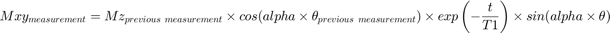

Calculating Predicted Signal Strength from Model Parameters and Raw Data
Contents
This function calculates an array of predicted signal data using the following relation:

where:
the first Mz is M0, the initial magnetisation
T1 is the relaxation constant for the decay of hyperpolarisation
is the estimated flip angle of the measurement
and alpha is the flip angle correction factor that converts the flip angle to one actually used in the experiment
Inputs
xn: is an array in the following format: [M0 alpha T1]
xdataf: is an array, where the first column contains the times where the measurements were taken and the second column contains the estimated flip angles used to take the measurements
Output
f: is an array of the predicted signal strength values from the inputs
function f = T1DecayFunction(xn,xdataf)
Calculating the Predicted Signal Strength at the First Measurement
f = zeros(length(xdataf(:,1)),1);
f(1) = xn(1)*exp(-1*(xdataf(1,1)/xn(3)))*sind(xn(2).*xdataf(1,2));
Calculating the Remaining Values of the Output Array
for el = 2:length(f) f(el) = (f(el-1)/sind(xn(2).*xdataf(el-1,2)))*cosd(xn(2).*xdataf(el-1,2))*exp(-1*((xdataf(el,1)-xdataf(el-1,1)))/xn(3))*sind(xn(2).*xdataf(el,2)); end
end
f =
1.0e+03 *
0.8040
0.7806
1.5051
1.4304
2.0152
1.8469
0.5750
Notes
The inputs used in the example were:
xn: [6949 1.3592 44.4454]
xdataf: [1 5; 2 5; 3 10; 4 10; 5 15; 6 15; 7 5]
The example was run by putting:
f = T1DecayFunction([6949 1.3592 44.4454],[1 5; 2 5; 3 10; 4 10; 5 15; 6 15; 7 5]) into the command window